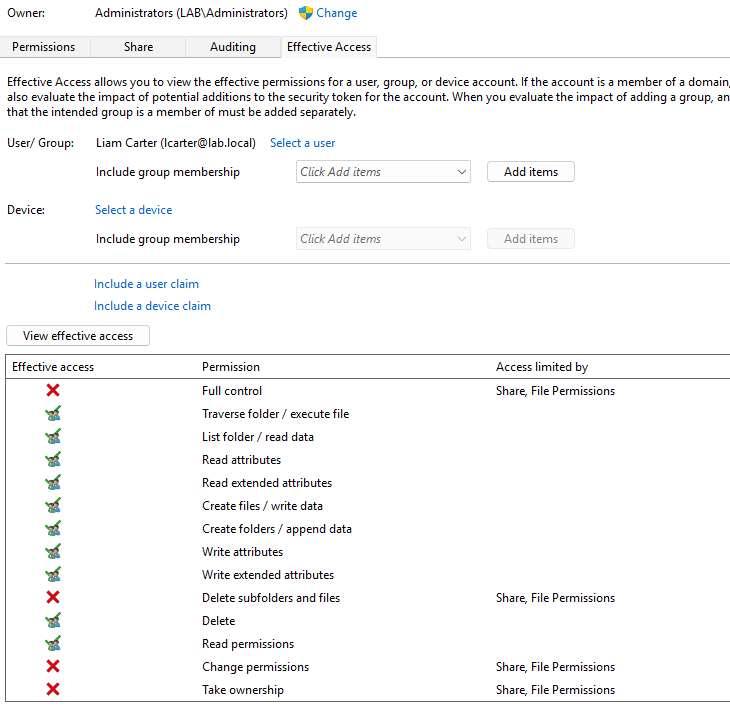
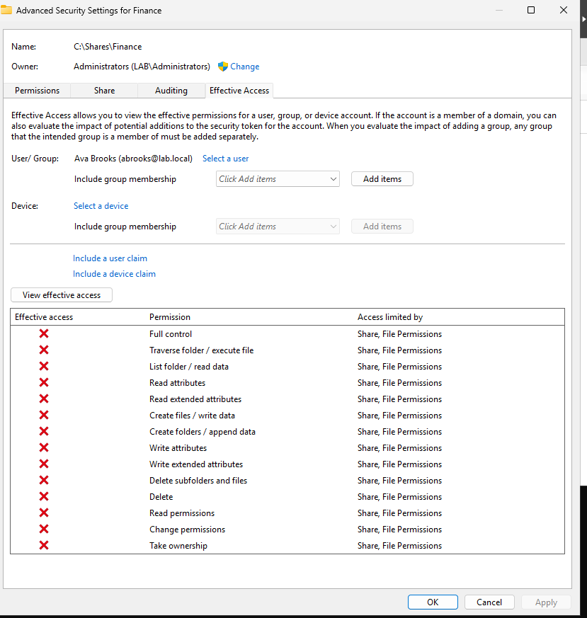
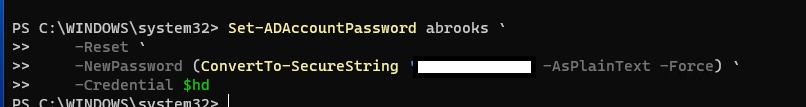
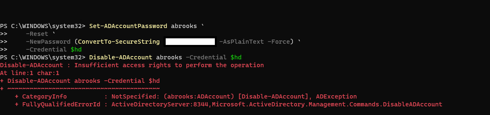
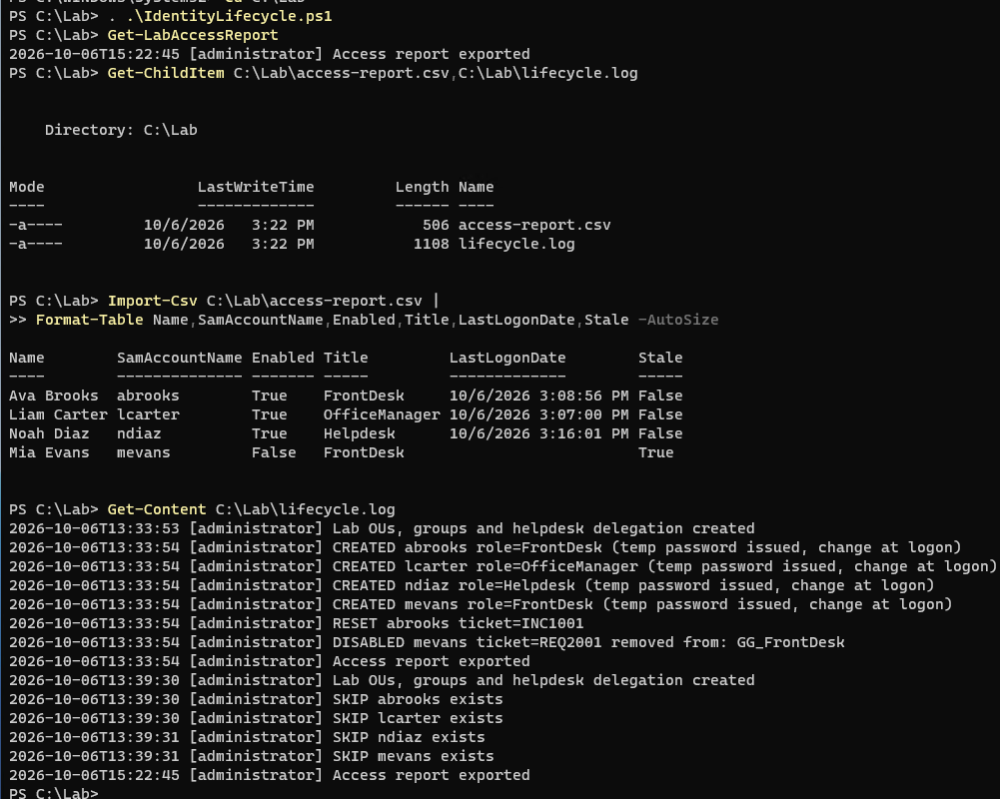
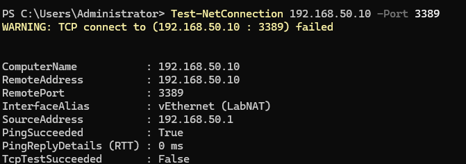
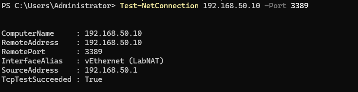

MAY 2025 — OCT 1, 2026
Emergency Medical Technician
AmeriPro EMS · Detroit area
Experience in emergency medical services, with a foundation in triage, documentation, calm communication, and customer service.
FROM EMERGENCY RESPONSE TO IT SUPPORT
I’m Duncan Welch, a former Detroit-area EMT building a career in IT support and cybersecurity. I bring calm decision-making, careful documentation, and a commitment to helping people.
Seeking entry-level IT support & IT analyst opportunities
01 / ABOUT
Working as an EMT taught me to listen closely, assess a situation, and identify what needs attention first. I’m bringing that same approach to a new career in technology.
I’m currently pursuing cybersecurity education and studying for CompTIA Security+. Alongside that learning, I’ve practiced beginner Active Directory administration in a virtual machine, including account management, permissions, and PowerShell automation.
My immediate focus is an entry-level IT support or IT analyst role where I can keep learning and contribute dependable, people-focused service. Cybersecurity and, eventually, AI are directions I want to grow into.
02 / EXPERIENCE
Real-world experience that shapes
how I approach support.
AmeriPro EMS · Detroit area
Experience in emergency medical services, with a foundation in triage, documentation, calm communication, and customer service.
Hart EMS · Detroit area
Developed a people-first approach to service and the ability to remain composed while assessing needs and communicating clearly.
Assess urgency and prioritize the next step.
Record details clearly and consistently.
Stay focused when the pressure rises.
Listen, explain, and treat people with care.
03 / PROJECTS
One practical lab.
An honest starting point.
A personal Active Directory and PowerShell lab exploring account lifecycle automation, role-based access, delegated permissions, access reporting, and RDP connectivity troubleshooting.
Lab practice; professional IT experience is still ahead.
Access checks, delegated actions, automation output, and connectivity tests from this practice environment.

Effective Access shows read/write permissions for the selected lab account, while full control and permission changes remain restricted.
Open image for full-size view
A different lab account has no effective access to the Finance share.
Open image for full-size view
The password-reset command returns without an error when run with the Helpdesk credential. The supplied screenshot has the password redacted.
Open image for full-size view
The same Helpdesk credential is denied permission to disable an account, demonstrating a boundary between password support and account administration.
Open image for full-size view
PowerShell exports a CSV access report and a lifecycle log showing account creation, password reset, offboarding, and skipped existing accounts.
Open image for full-size view
The host responds to ping, but the TCP connection test to port 3389 fails.
Open image for full-size view
A later test to the same host and RDP port succeeds. These tests establish the connectivity result; they do not alone identify the cause.
Open image for full-size view04 / SKILLS
Building technical foundations on experience helping people.
Active Directory account management · Organizational units · Permissions · Password resets · Account disabling · PowerShell automation · Virtual machine lab practice
Triage & prioritization · Clear documentation · Calm under pressure · Customer service · Communication
Cybersecurity fundamentals · CompTIA Security+ study · IT support & analysis · Longer-term interest in AI
05 / EDUCATION & DEVELOPMENT
Wayne County Community College District — associate degree in cybersecurity in progress.
Degree not yet completed.
Studying toward the CompTIA Security+ exam. Certification has not been earned.
Exam date: to be added when scheduled.
06 / CONTACT
Interested in a thoughtful, service-minded candidate for an entry-level IT role? Reach me by email or phone, or connect with me on LinkedIn.
Connect on LinkedIn